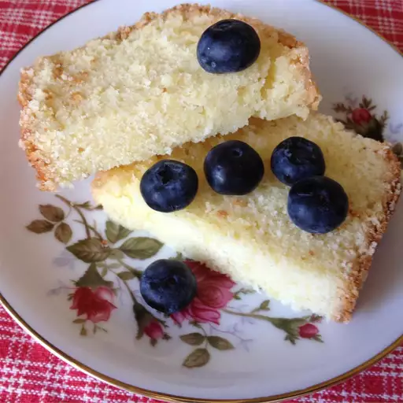

German Lemon Cake

Beautiful lemon cake with blueberries on top
This loaf cake is known in Germany as 'Zitronenkuchen', a dense pound cake with a lemon glaze all over the top and soaked into the cake itself.
Ingredients:
- 1 1/8 cups butters, softened
- 1 1/4 cups white sugar
- 5 eggs
- 3 tablespoons rum (optional)
- 1 cup all-purpose flour
- 1 cup cornstarch
- 1/3 cup lemon juice
- 1 cup confectioners' sugar
Steps
- Preheat the oven to 350 degrees (175 degrees C). Grease a 9x5 inch loaf pan.
- In a large bowl, beat the butter and sugar together until light and fluffy. Beat in the eggs, one at a time, mixing well after each one.
- Stir in the rum, then mix in the flour and cornstarch. Pour into the prepared loaf pan.
- Bake for 1 hour and 15 minutes in the preheated oven, or until a knife inserted into the crown comes out clean. Cool for at least 10 minutes before removing from the pan.
- While the cake is baking, mix together the lemon juice and confectioners' sugar. When the cake comes out of the oven, poke with a long fork or knitting needle all over.
- Pour the glaze over the top,and let it soak in. Cut into slices to serve.